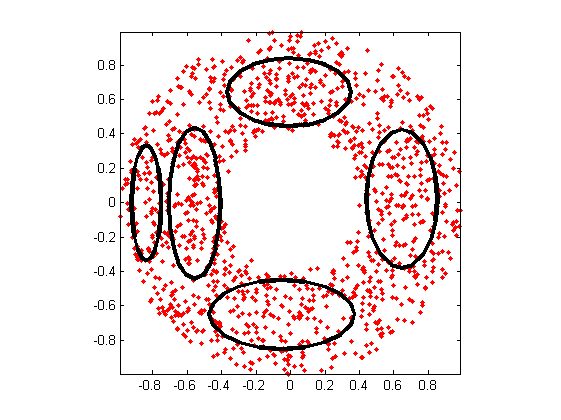
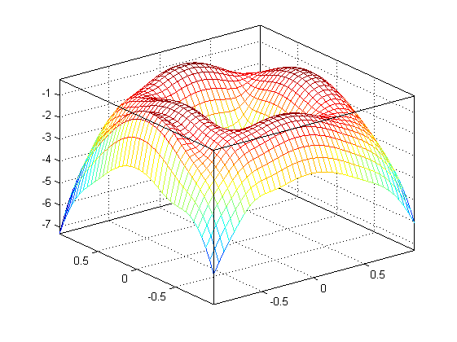
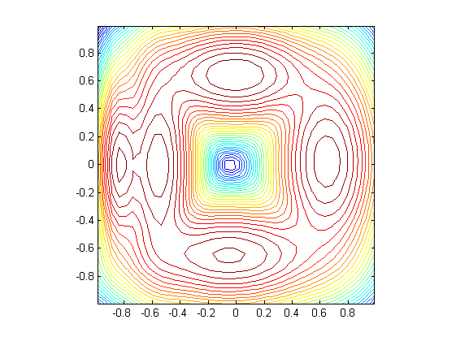

gmmTrainDemo2dCovType03
Animation of GMM training with covType=3 (full cov. matrix) for 2D data
Contents
Syntax
- gmmTrainDemo2dCovType03
Description
gmmTrainDemo2dCovType03 demonstrates animation of GMM training with
covType=3 (full cov. matrix) for 2D data.
Example
gmmTrainDemo2dCovType03
GMM iteration: 0/500, log likelihood. = -2639.998900 GMM iteration: 1/500, log likelihood. = -1782.648361 GMM iteration: 2/500, log likelihood. = -1699.319275 GMM iteration: 3/500, log likelihood. = -1647.660235 GMM iteration: 4/500, log likelihood. = -1612.739299 GMM iteration: 5/500, log likelihood. = -1580.781939 GMM iteration: 6/500, log likelihood. = -1548.634015 GMM iteration: 7/500, log likelihood. = -1518.396003 GMM iteration: 8/500, log likelihood. = -1491.596813 GMM iteration: 9/500, log likelihood. = -1469.543674 GMM iteration: 10/500, log likelihood. = -1453.291576 GMM iteration: 11/500, log likelihood. = -1442.264755 GMM iteration: 12/500, log likelihood. = -1435.074894 GMM iteration: 13/500, log likelihood. = -1430.382645 GMM iteration: 14/500, log likelihood. = -1427.243739 GMM iteration: 15/500, log likelihood. = -1425.055102 GMM iteration: 16/500, log likelihood. = -1423.437461 GMM iteration: 17/500, log likelihood. = -1422.159902 GMM iteration: 18/500, log likelihood. = -1421.101256 GMM iteration: 19/500, log likelihood. = -1420.136410 GMM iteration: 20/500, log likelihood. = -1419.213157 GMM iteration: 21/500, log likelihood. = -1418.322670 GMM iteration: 22/500, log likelihood. = -1417.478387 GMM iteration: 23/500, log likelihood. = -1416.700917 GMM iteration: 24/500, log likelihood. = -1416.014598 GMM iteration: 25/500, log likelihood. = -1415.434550 GMM iteration: 26/500, log likelihood. = -1414.962763 GMM iteration: 27/500, log likelihood. = -1414.590463 GMM iteration: 28/500, log likelihood. = -1414.302571 GMM iteration: 29/500, log likelihood. = -1414.081879 GMM iteration: 30/500, log likelihood. = -1413.911968 GMM iteration: 31/500, log likelihood. = -1413.778782 GMM iteration: 32/500, log likelihood. = -1413.671169 GMM iteration: 33/500, log likelihood. = -1413.580779 GMM iteration: 34/500, log likelihood. = -1413.501632 GMM iteration: 35/500, log likelihood. = -1413.429595 GMM iteration: 36/500, log likelihood. = -1413.361882 GMM iteration: 37/500, log likelihood. = -1413.296649 GMM iteration: 38/500, log likelihood. = -1413.232685 GMM iteration: 39/500, log likelihood. = -1413.169198 GMM iteration: 40/500, log likelihood. = -1413.105665 GMM iteration: 41/500, log likelihood. = -1413.041735 GMM iteration: 42/500, log likelihood. = -1412.977170 GMM iteration: 43/500, log likelihood. = -1412.911801 GMM iteration: 44/500, log likelihood. = -1412.845506 GMM iteration: 45/500, log likelihood. = -1412.778195 GMM iteration: 46/500, log likelihood. = -1412.709797 GMM iteration: 47/500, log likelihood. = -1412.640259 GMM iteration: 48/500, log likelihood. = -1412.569534 GMM iteration: 49/500, log likelihood. = -1412.497690 GMM iteration: 50/500, log likelihood. = -1412.424793 GMM iteration: 51/500, log likelihood. = -1412.350713 GMM iteration: 52/500, log likelihood. = -1412.275383 GMM iteration: 53/500, log likelihood. = -1412.198758 GMM iteration: 54/500, log likelihood. = -1412.120806 GMM iteration: 55/500, log likelihood. = -1412.041506 GMM iteration: 56/500, log likelihood. = -1411.960840 GMM iteration: 57/500, log likelihood. = -1411.878797 GMM iteration: 58/500, log likelihood. = -1411.795367 GMM iteration: 59/500, log likelihood. = -1411.710543 GMM iteration: 60/500, log likelihood. = -1411.624324 GMM iteration: 61/500, log likelihood. = -1411.536707 GMM iteration: 62/500, log likelihood. = -1411.447697 GMM iteration: 63/500, log likelihood. = -1411.357299 GMM iteration: 64/500, log likelihood. = -1411.265525 GMM iteration: 65/500, log likelihood. = -1411.172389 GMM iteration: 66/500, log likelihood. = -1411.077912 GMM iteration: 67/500, log likelihood. = -1410.982122 GMM iteration: 68/500, log likelihood. = -1410.885051 GMM iteration: 69/500, log likelihood. = -1410.786740 GMM iteration: 70/500, log likelihood. = -1410.687238 GMM iteration: 71/500, log likelihood. = -1410.586601 GMM iteration: 72/500, log likelihood. = -1410.484897 GMM iteration: 73/500, log likelihood. = -1410.382200 GMM iteration: 74/500, log likelihood. = -1410.278597 GMM iteration: 75/500, log likelihood. = -1410.174184 GMM iteration: 76/500, log likelihood. = -1410.069446 GMM iteration: 77/500, log likelihood. = -1409.965557 GMM iteration: 78/500, log likelihood. = -1409.862201 GMM iteration: 79/500, log likelihood. = -1409.759334 GMM iteration: 80/500, log likelihood. = -1409.657026 GMM iteration: 81/500, log likelihood. = -1409.555386 GMM iteration: 82/500, log likelihood. = -1409.454531 GMM iteration: 83/500, log likelihood. = -1409.354585 GMM iteration: 84/500, log likelihood. = -1409.255670 GMM iteration: 85/500, log likelihood. = -1409.157905 GMM iteration: 86/500, log likelihood. = -1409.061405 GMM iteration: 87/500, log likelihood. = -1408.966278 GMM iteration: 88/500, log likelihood. = -1408.872627 GMM iteration: 89/500, log likelihood. = -1408.780548 GMM iteration: 90/500, log likelihood. = -1408.690127 GMM iteration: 91/500, log likelihood. = -1408.601443 GMM iteration: 92/500, log likelihood. = -1408.514566 GMM iteration: 93/500, log likelihood. = -1408.429557 GMM iteration: 94/500, log likelihood. = -1408.346467 GMM iteration: 95/500, log likelihood. = -1408.265338 GMM iteration: 96/500, log likelihood. = -1408.186204 GMM iteration: 97/500, log likelihood. = -1408.109088 GMM iteration: 98/500, log likelihood. = -1408.034009 GMM iteration: 99/500, log likelihood. = -1407.960973 GMM iteration: 100/500, log likelihood. = -1407.889981 GMM iteration: 101/500, log likelihood. = -1407.821028 GMM iteration: 102/500, log likelihood. = -1407.754102 GMM iteration: 103/500, log likelihood. = -1407.689184 GMM iteration: 104/500, log likelihood. = -1407.626251 GMM iteration: 105/500, log likelihood. = -1407.565277 GMM iteration: 106/500, log likelihood. = -1407.506230 GMM iteration: 107/500, log likelihood. = -1407.449076 GMM iteration: 108/500, log likelihood. = -1407.393776 GMM iteration: 109/500, log likelihood. = -1407.340293 GMM iteration: 110/500, log likelihood. = -1407.288585 GMM iteration: 111/500, log likelihood. = -1407.238608 GMM iteration: 112/500, log likelihood. = -1407.190320 GMM iteration: 113/500, log likelihood. = -1407.143676 GMM iteration: 114/500, log likelihood. = -1407.098632 GMM iteration: 115/500, log likelihood. = -1407.055142 GMM iteration: 116/500, log likelihood. = -1407.013162 GMM iteration: 117/500, log likelihood. = -1406.972647 GMM iteration: 118/500, log likelihood. = -1406.933555 GMM iteration: 119/500, log likelihood. = -1406.895840 GMM iteration: 120/500, log likelihood. = -1406.859461 GMM iteration: 121/500, log likelihood. = -1406.824376 GMM iteration: 122/500, log likelihood. = -1406.790543 GMM iteration: 123/500, log likelihood. = -1406.757923 GMM iteration: 124/500, log likelihood. = -1406.726476 GMM iteration: 125/500, log likelihood. = -1406.696164 GMM iteration: 126/500, log likelihood. = -1406.666951 GMM iteration: 127/500, log likelihood. = -1406.638800 GMM iteration: 128/500, log likelihood. = -1406.611675 GMM iteration: 129/500, log likelihood. = -1406.585543 GMM iteration: 130/500, log likelihood. = -1406.560372 GMM iteration: 131/500, log likelihood. = -1406.536128 GMM iteration: 132/500, log likelihood. = -1406.512780 GMM iteration: 133/500, log likelihood. = -1406.490299 GMM iteration: 134/500, log likelihood. = -1406.468655 GMM iteration: 135/500, log likelihood. = -1406.447821 GMM iteration: 136/500, log likelihood. = -1406.427768 GMM iteration: 137/500, log likelihood. = -1406.408470 GMM iteration: 138/500, log likelihood. = -1406.389902 GMM iteration: 139/500, log likelihood. = -1406.372038 GMM iteration: 140/500, log likelihood. = -1406.354855 GMM iteration: 141/500, log likelihood. = -1406.338330 GMM iteration: 142/500, log likelihood. = -1406.322439 GMM iteration: 143/500, log likelihood. = -1406.307161 GMM iteration: 144/500, log likelihood. = -1406.292475 GMM iteration: 145/500, log likelihood. = -1406.278361 GMM iteration: 146/500, log likelihood. = -1406.264798 GMM iteration: 147/500, log likelihood. = -1406.251767 GMM iteration: 148/500, log likelihood. = -1406.239251 GMM iteration: 149/500, log likelihood. = -1406.227230 GMM iteration: 150/500, log likelihood. = -1406.215687 GMM iteration: 151/500, log likelihood. = -1406.204607 GMM iteration: 152/500, log likelihood. = -1406.193971 GMM iteration: 153/500, log likelihood. = -1406.183765 GMM iteration: 154/500, log likelihood. = -1406.173972 GMM iteration: 155/500, log likelihood. = -1406.164579 GMM iteration: 156/500, log likelihood. = -1406.155571 GMM iteration: 157/500, log likelihood. = -1406.146933 GMM iteration: 158/500, log likelihood. = -1406.138653 GMM iteration: 159/500, log likelihood. = -1406.130717 GMM iteration: 160/500, log likelihood. = -1406.123112 GMM iteration: 161/500, log likelihood. = -1406.115827 GMM iteration: 162/500, log likelihood. = -1406.108849 GMM iteration: 163/500, log likelihood. = -1406.102167 GMM iteration: 164/500, log likelihood. = -1406.095770 GMM iteration: 165/500, log likelihood. = -1406.089647 GMM iteration: 166/500, log likelihood. = -1406.083787 GMM iteration: 167/500, log likelihood. = -1406.078180 GMM iteration: 168/500, log likelihood. = -1406.072817 GMM iteration: 169/500, log likelihood. = -1406.067689 GMM iteration: 170/500, log likelihood. = -1406.062785 GMM iteration: 171/500, log likelihood. = -1406.058098 GMM iteration: 172/500, log likelihood. = -1406.053618 GMM iteration: 173/500, log likelihood. = -1406.049338 GMM iteration: 174/500, log likelihood. = -1406.045249 GMM iteration: 175/500, log likelihood. = -1406.041343 GMM iteration: 176/500, log likelihood. = -1406.037614 GMM iteration: 177/500, log likelihood. = -1406.034054 GMM iteration: 178/500, log likelihood. = -1406.030657 GMM iteration: 179/500, log likelihood. = -1406.027414 GMM iteration: 180/500, log likelihood. = -1406.024321 GMM iteration: 181/500, log likelihood. = -1406.021370 GMM iteration: 182/500, log likelihood. = -1406.018556 GMM iteration: 183/500, log likelihood. = -1406.015874 GMM iteration: 184/500, log likelihood. = -1406.013316 GMM iteration: 185/500, log likelihood. = -1406.010879 GMM iteration: 186/500, log likelihood. = -1406.008556 GMM iteration: 187/500, log likelihood. = -1406.006343 GMM iteration: 188/500, log likelihood. = -1406.004236 GMM iteration: 189/500, log likelihood. = -1406.002228 GMM iteration: 190/500, log likelihood. = -1406.000317 GMM iteration: 191/500, log likelihood. = -1405.998498 GMM iteration: 192/500, log likelihood. = -1405.996767 GMM iteration: 193/500, log likelihood. = -1405.995119 GMM iteration: 194/500, log likelihood. = -1405.993551 GMM iteration: 195/500, log likelihood. = -1405.992060 GMM iteration: 196/500, log likelihood. = -1405.990642 GMM iteration: 197/500, log likelihood. = -1405.989293 GMM iteration: 198/500, log likelihood. = -1405.988010 GMM iteration: 199/500, log likelihood. = -1405.986791 GMM iteration: 200/500, log likelihood. = -1405.985633 GMM iteration: 201/500, log likelihood. = -1405.984532 GMM iteration: 202/500, log likelihood. = -1405.983486 GMM iteration: 203/500, log likelihood. = -1405.982492 GMM iteration: 204/500, log likelihood. = -1405.981548 GMM iteration: 205/500, log likelihood. = -1405.980652 GMM iteration: 206/500, log likelihood. = -1405.979801 GMM iteration: 207/500, log likelihood. = -1405.978992 GMM iteration: 208/500, log likelihood. = -1405.978225 GMM iteration: 209/500, log likelihood. = -1405.977497 GMM iteration: 210/500, log likelihood. = -1405.976806 GMM iteration: 211/500, log likelihood. = -1405.976150 GMM iteration: 212/500, log likelihood. = -1405.975528 GMM iteration: 213/500, log likelihood. = -1405.974938 GMM iteration: 214/500, log likelihood. = -1405.974379 GMM iteration: 215/500, log likelihood. = -1405.973848 GMM iteration: 216/500, log likelihood. = -1405.973344 GMM iteration: 217/500, log likelihood. = -1405.972867 GMM iteration: 218/500, log likelihood. = -1405.972415 GMM iteration: 219/500, log likelihood. = -1405.971986 GMM iteration: 220/500, log likelihood. = -1405.971579 GMM iteration: 221/500, log likelihood. = -1405.971194 GMM iteration: 222/500, log likelihood. = -1405.970829 GMM iteration: 223/500, log likelihood. = -1405.970483 GMM iteration: 224/500, log likelihood. = -1405.970155 GMM iteration: 225/500, log likelihood. = -1405.969845 GMM iteration: 226/500, log likelihood. = -1405.969550 GMM iteration: 227/500, log likelihood. = -1405.969272 GMM iteration: 228/500, log likelihood. = -1405.969008 GMM iteration: 229/500, log likelihood. = -1405.968758 GMM iteration: 230/500, log likelihood. = -1405.968522 GMM iteration: 231/500, log likelihood. = -1405.968298 GMM iteration: 232/500, log likelihood. = -1405.968086 GMM iteration: 233/500, log likelihood. = -1405.967885 GMM iteration: 234/500, log likelihood. = -1405.967695 GMM iteration: 235/500, log likelihood. = -1405.967515 GMM iteration: 236/500, log likelihood. = -1405.967345 GMM iteration: 237/500, log likelihood. = -1405.967184 GMM iteration: 238/500, log likelihood. = -1405.967032 GMM iteration: 239/500, log likelihood. = -1405.966888 GMM iteration: 240/500, log likelihood. = -1405.966751 GMM iteration: 241/500, log likelihood. = -1405.966622 GMM iteration: 242/500, log likelihood. = -1405.966500 GMM iteration: 243/500, log likelihood. = -1405.966385 GMM iteration: 244/500, log likelihood. = -1405.966275 GMM iteration: 245/500, log likelihood. = -1405.966172 GMM iteration: 246/500, log likelihood. = -1405.966074 GMM iteration: 247/500, log likelihood. = -1405.965982 GMM iteration: 248/500, log likelihood. = -1405.965895 GMM iteration: 249/500, log likelihood. = -1405.965812 GMM iteration: 250/500, log likelihood. = -1405.965734 GMM iteration: 251/500, log likelihood. = -1405.965660 GMM iteration: 252/500, log likelihood. = -1405.965590 GMM iteration: 253/500, log likelihood. = -1405.965524 GMM iteration: 254/500, log likelihood. = -1405.965462 GMM iteration: 255/500, log likelihood. = -1405.965403 GMM iteration: 256/500, log likelihood. = -1405.965347 GMM iteration: 257/500, log likelihood. = -1405.965294 GMM iteration: 258/500, log likelihood. = -1405.965245 GMM iteration: 259/500, log likelihood. = -1405.965197 GMM iteration: 260/500, log likelihood. = -1405.965153 GMM iteration: 261/500, log likelihood. = -1405.965111 GMM iteration: 262/500, log likelihood. = -1405.965071 GMM iteration: 263/500, log likelihood. = -1405.965034 GMM iteration: 264/500, log likelihood. = -1405.964998 GMM iteration: 265/500, log likelihood. = -1405.964965 GMM iteration: 266/500, log likelihood. = -1405.964933 GMM iteration: 267/500, log likelihood. = -1405.964903 GMM iteration: 268/500, log likelihood. = -1405.964875 GMM iteration: 269/500, log likelihood. = -1405.964848 GMM iteration: 270/500, log likelihood. = -1405.964823 GMM iteration: 271/500, log likelihood. = -1405.964799 GMM iteration: 272/500, log likelihood. = -1405.964777 GMM iteration: 273/500, log likelihood. = -1405.964755 GMM iteration: 274/500, log likelihood. = -1405.964735 GMM iteration: 275/500, log likelihood. = -1405.964716 GMM iteration: 276/500, log likelihood. = -1405.964698 GMM iteration: 277/500, log likelihood. = -1405.964681 GMM iteration: 278/500, log likelihood. = -1405.964665 GMM iteration: 279/500, log likelihood. = -1405.964650 GMM iteration: 280/500, log likelihood. = -1405.964636 GMM iteration: 281/500, log likelihood. = -1405.964622 GMM iteration: 282/500, log likelihood. = -1405.964610 GMM iteration: 283/500, log likelihood. = -1405.964598 GMM iteration: 284/500, log likelihood. = -1405.964586 GMM iteration: 285/500, log likelihood. = -1405.964576 GMM iteration: 286/500, log likelihood. = -1405.964566 GMM iteration: 287/500, log likelihood. = -1405.964556 GMM iteration: 288/500, log likelihood. = -1405.964547 GMM iteration: 289/500, log likelihood. = -1405.964538 GMM iteration: 290/500, log likelihood. = -1405.964530 GMM iteration: 291/500, log likelihood. = -1405.964523 GMM iteration: 292/500, log likelihood. = -1405.964516 GMM iteration: 293/500, log likelihood. = -1405.964509 GMM iteration: 294/500, log likelihood. = -1405.964502 GMM iteration: 295/500, log likelihood. = -1405.964496 GMM iteration: 296/500, log likelihood. = -1405.964491 GMM iteration: 297/500, log likelihood. = -1405.964485 GMM iteration: 298/500, log likelihood. = -1405.964480 GMM iteration: 299/500, log likelihood. = -1405.964475 GMM iteration: 300/500, log likelihood. = -1405.964471 GMM iteration: 301/500, log likelihood. = -1405.964467 GMM iteration: 302/500, log likelihood. = -1405.964463 GMM iteration: 303/500, log likelihood. = -1405.964459 GMM iteration: 304/500, log likelihood. = -1405.964455 GMM iteration: 305/500, log likelihood. = -1405.964452 GMM iteration: 306/500, log likelihood. = -1405.964449 GMM iteration: 307/500, log likelihood. = -1405.964446 GMM iteration: 308/500, log likelihood. = -1405.964443 GMM iteration: 309/500, log likelihood. = -1405.964440 GMM iteration: 310/500, log likelihood. = -1405.964437 GMM iteration: 311/500, log likelihood. = -1405.964435 GMM iteration: 312/500, log likelihood. = -1405.964433 GMM iteration: 313/500, log likelihood. = -1405.964431 GMM iteration: 314/500, log likelihood. = -1405.964429 GMM iteration: 315/500, log likelihood. = -1405.964427 GMM iteration: 316/500, log likelihood. = -1405.964425 GMM iteration: 317/500, log likelihood. = -1405.964423 GMM iteration: 318/500, log likelihood. = -1405.964422 GMM iteration: 319/500, log likelihood. = -1405.964420 GMM iteration: 320/500, log likelihood. = -1405.964419 GMM iteration: 321/500, log likelihood. = -1405.964417 GMM iteration: 322/500, log likelihood. = -1405.964416 GMM iteration: 323/500, log likelihood. = -1405.964415 GMM iteration: 324/500, log likelihood. = -1405.964414 GMM iteration: 325/500, log likelihood. = -1405.964413 GMM iteration: 326/500, log likelihood. = -1405.964412 GMM iteration: 327/500, log likelihood. = -1405.964411 GMM iteration: 328/500, log likelihood. = -1405.964410 GMM iteration: 329/500, log likelihood. = -1405.964409 GMM iteration: 330/500, log likelihood. = -1405.964408 GMM iteration: 331/500, log likelihood. = -1405.964407 GMM iteration: 332/500, log likelihood. = -1405.964407 GMM iteration: 333/500, log likelihood. = -1405.964406 GMM iteration: 334/500, log likelihood. = -1405.964405 GMM iteration: 335/500, log likelihood. = -1405.964405 GMM iteration: 336/500, log likelihood. = -1405.964404 GMM iteration: 337/500, log likelihood. = -1405.964404 GMM iteration: 338/500, log likelihood. = -1405.964403 GMM iteration: 339/500, log likelihood. = -1405.964403 GMM iteration: 340/500, log likelihood. = -1405.964402 GMM iteration: 341/500, log likelihood. = -1405.964402 GMM iteration: 342/500, log likelihood. = -1405.964401 GMM iteration: 343/500, log likelihood. = -1405.964401 GMM iteration: 344/500, log likelihood. = -1405.964401 GMM iteration: 345/500, log likelihood. = -1405.964400 GMM iteration: 346/500, log likelihood. = -1405.964400 GMM iteration: 347/500, log likelihood. = -1405.964400 GMM iteration: 348/500, log likelihood. = -1405.964399 GMM iteration: 349/500, log likelihood. = -1405.964399 GMM iteration: 350/500, log likelihood. = -1405.964399 GMM iteration: 351/500, log likelihood. = -1405.964399 GMM iteration: 352/500, log likelihood. = -1405.964398 GMM iteration: 353/500, log likelihood. = -1405.964398 GMM iteration: 354/500, log likelihood. = -1405.964398 GMM iteration: 355/500, log likelihood. = -1405.964398 GMM iteration: 356/500, log likelihood. = -1405.964398 GMM iteration: 357/500, log likelihood. = -1405.964397 GMM iteration: 358/500, log likelihood. = -1405.964397 GMM iteration: 359/500, log likelihood. = -1405.964397 GMM iteration: 360/500, log likelihood. = -1405.964397 GMM iteration: 361/500, log likelihood. = -1405.964397 GMM iteration: 362/500, log likelihood. = -1405.964397 GMM iteration: 363/500, log likelihood. = -1405.964397 GMM iteration: 364/500, log likelihood. = -1405.964397 GMM iteration: 365/500, log likelihood. = -1405.964396 GMM iteration: 366/500, log likelihood. = -1405.964396 GMM iteration: 367/500, log likelihood. = -1405.964396 GMM iteration: 368/500, log likelihood. = -1405.964396 GMM iteration: 369/500, log likelihood. = -1405.964396 GMM iteration: 370/500, log likelihood. = -1405.964396 GMM iteration: 371/500, log likelihood. = -1405.964396 GMM iteration: 372/500, log likelihood. = -1405.964396 GMM iteration: 373/500, log likelihood. = -1405.964396 GMM iteration: 374/500, log likelihood. = -1405.964396 GMM iteration: 375/500, log likelihood. = -1405.964396 GMM iteration: 376/500, log likelihood. = -1405.964396 GMM iteration: 377/500, log likelihood. = -1405.964396 GMM iteration: 378/500, log likelihood. = -1405.964395 GMM iteration: 379/500, log likelihood. = -1405.964395 GMM iteration: 380/500, log likelihood. = -1405.964395 GMM iteration: 381/500, log likelihood. = -1405.964395 GMM iteration: 382/500, log likelihood. = -1405.964395 GMM iteration: 383/500, log likelihood. = -1405.964395 GMM iteration: 384/500, log likelihood. = -1405.964395 GMM iteration: 385/500, log likelihood. = -1405.964395 GMM iteration: 386/500, log likelihood. = -1405.964395 GMM iteration: 387/500, log likelihood. = -1405.964395 GMM iteration: 388/500, log likelihood. = -1405.964395 GMM iteration: 389/500, log likelihood. = -1405.964395 GMM iteration: 390/500, log likelihood. = -1405.964395 GMM iteration: 391/500, log likelihood. = -1405.964395 GMM iteration: 392/500, log likelihood. = -1405.964395 GMM iteration: 393/500, log likelihood. = -1405.964395 GMM iteration: 394/500, log likelihood. = -1405.964395 GMM iteration: 395/500, log likelihood. = -1405.964395 GMM iteration: 396/500, log likelihood. = -1405.964395 GMM iteration: 397/500, log likelihood. = -1405.964395 GMM iteration: 398/500, log likelihood. = -1405.964395 GMM iteration: 399/500, log likelihood. = -1405.964395 GMM iteration: 400/500, log likelihood. = -1405.964395 GMM iteration: 401/500, log likelihood. = -1405.964395 GMM iteration: 402/500, log likelihood. = -1405.964395 GMM iteration: 403/500, log likelihood. = -1405.964395 GMM iteration: 404/500, log likelihood. = -1405.964395 GMM iteration: 405/500, log likelihood. = -1405.964395 GMM iteration: 406/500, log likelihood. = -1405.964395 GMM iteration: 407/500, log likelihood. = -1405.964395 GMM iteration: 408/500, log likelihood. = -1405.964395 GMM iteration: 409/500, log likelihood. = -1405.964395 GMM iteration: 410/500, log likelihood. = -1405.964395 GMM iteration: 411/500, log likelihood. = -1405.964395 GMM iteration: 412/500, log likelihood. = -1405.964395 GMM iteration: 413/500, log likelihood. = -1405.964395 GMM iteration: 414/500, log likelihood. = -1405.964395 GMM iteration: 415/500, log likelihood. = -1405.964395 GMM iteration: 416/500, log likelihood. = -1405.964395 GMM iteration: 417/500, log likelihood. = -1405.964395 GMM iteration: 418/500, log likelihood. = -1405.964395 GMM iteration: 419/500, log likelihood. = -1405.964395 GMM iteration: 420/500, log likelihood. = -1405.964395 GMM iteration: 421/500, log likelihood. = -1405.964395 GMM iteration: 422/500, log likelihood. = -1405.964395 GMM iteration: 423/500, log likelihood. = -1405.964395 GMM iteration: 424/500, log likelihood. = -1405.964395 GMM iteration: 425/500, log likelihood. = -1405.964395 GMM iteration: 426/500, log likelihood. = -1405.964395 GMM iteration: 427/500, log likelihood. = -1405.964395 GMM iteration: 428/500, log likelihood. = -1405.964395 GMM iteration: 429/500, log likelihood. = -1405.964395 GMM iteration: 430/500, log likelihood. = -1405.964395 GMM iteration: 431/500, log likelihood. = -1405.964395 GMM iteration: 432/500, log likelihood. = -1405.964395 GMM iteration: 433/500, log likelihood. = -1405.964395 GMM iteration: 434/500, log likelihood. = -1405.964395 GMM iteration: 435/500, log likelihood. = -1405.964395 GMM iteration: 436/500, log likelihood. = -1405.964395 GMM iteration: 437/500, log likelihood. = -1405.964395 GMM iteration: 438/500, log likelihood. = -1405.964395 GMM iteration: 439/500, log likelihood. = -1405.964395 GMM iteration: 440/500, log likelihood. = -1405.964395 GMM iteration: 441/500, log likelihood. = -1405.964395 GMM iteration: 442/500, log likelihood. = -1405.964395 GMM iteration: 443/500, log likelihood. = -1405.964395 GMM iteration: 444/500, log likelihood. = -1405.964395 GMM iteration: 445/500, log likelihood. = -1405.964395 GMM iteration: 446/500, log likelihood. = -1405.964395 GMM iteration: 447/500, log likelihood. = -1405.964395 GMM iteration: 448/500, log likelihood. = -1405.964395 GMM iteration: 449/500, log likelihood. = -1405.964395 GMM iteration: 450/500, log likelihood. = -1405.964395 GMM iteration: 451/500, log likelihood. = -1405.964395 GMM iteration: 452/500, log likelihood. = -1405.964395 GMM iteration: 453/500, log likelihood. = -1405.964395 GMM iteration: 454/500, log likelihood. = -1405.964395 GMM iteration: 455/500, log likelihood. = -1405.964395 GMM iteration: 456/500, log likelihood. = -1405.964395 GMM iteration: 457/500, log likelihood. = -1405.964395 GMM iteration: 458/500, log likelihood. = -1405.964395 GMM iteration: 459/500, log likelihood. = -1405.964395 GMM iteration: 460/500, log likelihood. = -1405.964395 GMM iteration: 461/500, log likelihood. = -1405.964395 GMM iteration: 462/500, log likelihood. = -1405.964395 GMM iteration: 463/500, log likelihood. = -1405.964395 GMM iteration: 464/500, log likelihood. = -1405.964395 GMM iteration: 465/500, log likelihood. = -1405.964395 GMM iteration: 466/500, log likelihood. = -1405.964395 GMM iteration: 467/500, log likelihood. = -1405.964395 GMM iteration: 468/500, log likelihood. = -1405.964395 GMM iteration: 469/500, log likelihood. = -1405.964395 GMM iteration: 470/500, log likelihood. = -1405.964395 GMM iteration: 471/500, log likelihood. = -1405.964395 GMM iteration: 472/500, log likelihood. = -1405.964395 GMM iteration: 473/500, log likelihood. = -1405.964395 GMM iteration: 474/500, log likelihood. = -1405.964395 GMM iteration: 475/500, log likelihood. = -1405.964395 GMM iteration: 476/500, log likelihood. = -1405.964395 GMM iteration: 477/500, log likelihood. = -1405.964395 GMM iteration: 478/500, log likelihood. = -1405.964395 GMM iteration: 479/500, log likelihood. = -1405.964395 GMM iteration: 480/500, log likelihood. = -1405.964395 GMM iteration: 481/500, log likelihood. = -1405.964395 GMM iteration: 482/500, log likelihood. = -1405.964395 GMM iteration: 483/500, log likelihood. = -1405.964395 GMM iteration: 484/500, log likelihood. = -1405.964395 GMM iteration: 485/500, log likelihood. = -1405.964395 GMM iteration: 486/500, log likelihood. = -1405.964395 GMM iteration: 487/500, log likelihood. = -1405.964395 GMM iteration: 488/500, log likelihood. = -1405.964395 GMM iteration: 489/500, log likelihood. = -1405.964395 GMM iteration: 490/500, log likelihood. = -1405.964395 GMM iteration: 491/500, log likelihood. = -1405.964395 GMM iteration: 492/500, log likelihood. = -1405.964395 GMM iteration: 493/500, log likelihood. = -1405.964395 GMM iteration: 494/500, log likelihood. = -1405.964395 GMM iteration: 495/500, log likelihood. = -1405.964395 GMM iteration: 496/500, log likelihood. = -1405.964395 GMM iteration: 497/500, log likelihood. = -1405.964395 GMM iteration: 498/500, log likelihood. = -1405.964395 GMM iteration: 499/500, log likelihood. = -1405.964395 GMM total iteration count = 500, log likelihood. = -1405.964395  